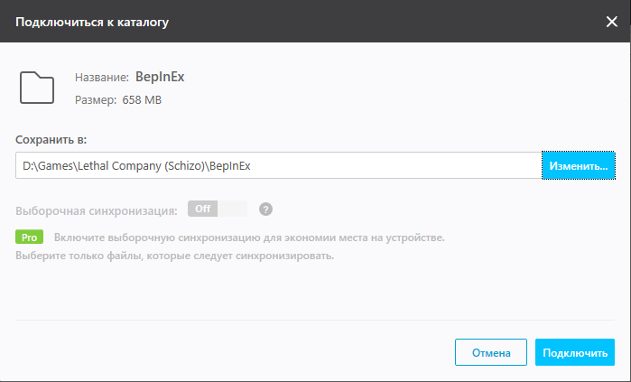

Туториал установки сборки
*сборка может работать как и на пиратской версии, так и на лицензии
Мы играем на пиратке потому что мы нищие
1. Установка игры
1.1 Скачать игру - MEGA DRIVE
2. Установка модов
2.1 Скачать программу для синхронизации модов - ЖМЯК
2.1.1 Установить программу по любому пути с такими параметрами

*программу надо будет запускать повторно только если в сборке будет какое-то обновление
2.2 Перейти по ССЫЛКЕ
2.3 Нажать на красную кнопку
2.4 Когда откроется программа, то или
1. Нажать кнопку "Изменить..." и указать путь до игры (пример пути указан на скриншоте) или
2. Если во время установки игры не менялся путь к игре, тои
вставь в поле "Сохранить в:"

2.5 Нажать "Подключить" и ждать когда @Querzzis даст доступ
2.6 Запустить игру и радоваться
3. Как обновить сборку модов
Все очень просто. Нужно запустить Resilio Sync и дождать когда все файлы синхронизируются
1. Нажать кнопку "Изменить..." и указать путь до игры (пример пути указан на скриншоте) или
2. Если во время установки игры не менялся путь к игре, тои
вставь в поле "Сохранить в:"